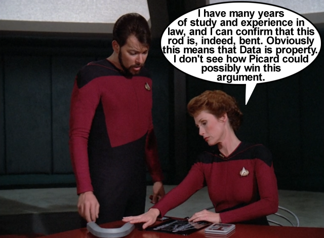

Thoughts: This is certainly an iconic episode of TNG, often highly-rated and often discussed and touted as one of the series' best episodes. And here I am, writing a long opinion about what's wrong with it... but there's just so much lunacy around the procedures and the very premise of this legal battle.
First, let's acknowledge that I am not a lawyer, but let us also acknowledge that this episode does not provide us with enough information to truly analyze the legal merits of the fictional “Acts of Cumberland” on which Louvois based her original ruling. Nor do we have access to any other case law or precedent that may have been established in this fictional universe. We have only what is presented to us in the episode, which is obviously not enough for anyone to evaluate the in-universe validity of any of the arguments made here, on either side.
But I'm still going to try. Louvois rules that 1) Data is the property of Starfleet, 2) Data cannot resign, and 3) Data cannot refuse to cooperate with Maddox. This is wrought with problems. First, assertions 1 and 2 are absolutely incompatible. If Data is the property of Starfleet, then the second assertion must be “Data should not have been given a Starfleet commission in the first place”, not that he “can't resign”. One could argue that Starfleet has already decided on the matter of whether Data is property: No, because Starfleet property is not permitted to attend the academy and earn a commission. Either Data has the right to resign just as any other commissioned officer does, or Starfleet was wrong to give him a commission in the first place.
Further, on what legal basis does Starfleet claim ownership of Data? The “Finders Keepers” Act of 2252? This is where we get into a bit of a grey area since, again, we don't have 24th-century law books to study. But if the Federation's laws are anything like today's laws, then if Data is anyone's property, he would be the property of his creator, Noonien Soong. It's unclear what Soong's status is at this point, but even if he is presumed dead, then Data would be the property of Soong's estate. There is no indication that Soong would have bequeathed Data to Starfleet – in fact, in a later episode, we find that Soong was actually a bit disappointed about Data choosing to join Starfleet. So, again, I really have to wonder what Starfleet's claim of ownership is based on. It certainly can't be that “Data chose to join Starfleet, therefore Starfleet owns Data” because those two statements are antithetical!
So let's get to the procedural aspect. Picard objects to Louvois' ruling, so she is forced to hold a hearing, but she is understaffed. Lucky for us, there is a completely asinine procedure for just such an event! Picard gets to serve as the defense because he is the ship's captain, not because he's the one who issued the challenge. And Riker is forced into “prosecuting” the case just because he's the next most senior officer, even though he firmly sides with the captain's (and Data's) position. *sigh* Okay, first of all, there is no “prosecution” here because this is not a criminal case. Second, and most obviously, if you're understaffed and don't have legal experts to serve as counsel, you don't just force military officers into the roles for the sake of procedure. Riker representing Maddox is insane – Riker is no more a legal expert than Maddox, so why doesn't Maddox just represent himself? He'd be better off, since Riker doesn't believe in his cause, anyway. None of this makes any sense.
But we will plod on. Riker has Data bend a thick metal rod. Picard rightfully objects on the basis that Data's strength has nothing to do with anything, but he's overruled by Louvois who inspects the bent rod as if it is crucial evidence. Next, Riker wants to remove Data's arm. The captain again objects, but then withdrawals the objection before even articulating it. Seriously though, is there some case law that says, “If it can bend a metal rod, it's property. If you can remove its arm, it's property”? None of this has anything to do with the issue at hand.

Thankfully, Picard gets this hearing back on the rails. He concedes that Data is a machine that was created by a human, and rightfully reminds everyone in the room that those facts have no bearing on these proceedings. It's Picard's talk with Guinan along with his impassioned speech to the court that provide a meaningful emotional component to the episode and help to make up for any of its previous shortcomings.


 @c6reviews.
@c6reviews.